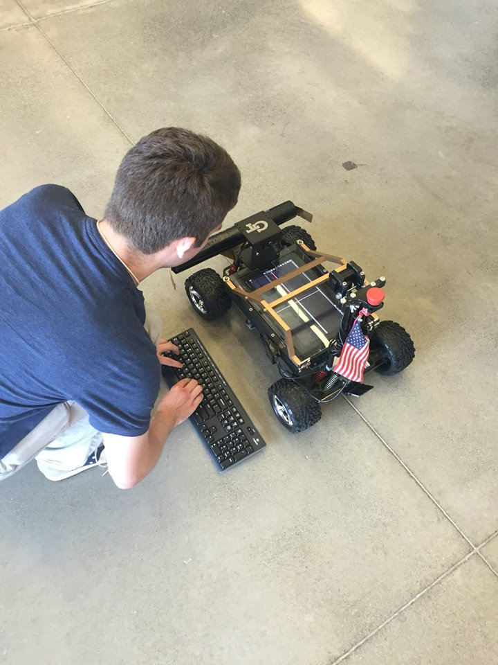

IARRC

IARRC, the International Autonomous Robot Racing Competition. In 2015, The Agency, a club that has been building progressively more advanced autonomous vehicles, was asked to assist with software development for the competition by Robojackets, a GT robotics organization. Our code, written in C++ allowed us to place 4th overall at the competition.
The system uses a reactive-control driving scheme on the ROS platform. The readings from a lidar and camera were converted into a birds-eye view and then into OpenCV images. These images were then overlayed and used to make steering decisions. In addition to architecting the system, I also implemented some of the ROS nodes, including one that converts a pointcloud to an OpenCV imagemat and the system that combined the camera and lidar data.